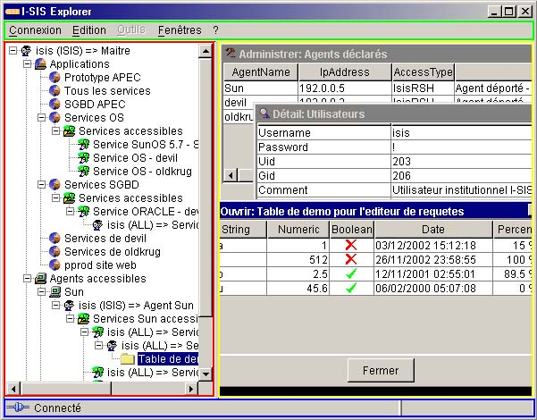
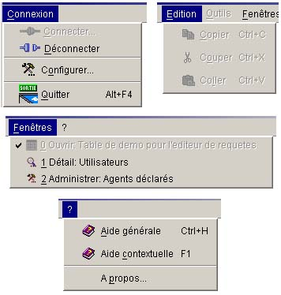

I-SIS Explorer

Guide d'utilisation
|
|
I-SIS Explorer |
|
|
Guide d'utilisation |
||
Le I-SIS Explorer est constitué d'une fenêtre principale. Celle-ci assure l'affichage des données du système d'information des services à l'utilisateur, et permet l'interaction de ce dernier avec les modules du système d'information des services.
D'autres fenêtres peuvent apparaître au cours de l'utilisation de I-SIS Explorer. Celles-ci sont indiquées dans la suite de ce guide en fonction des actions engendrant leurs apparitions.

Cette fenêtre est divisée en quatre zones:
La barre de menu (encadrée de vert sur la copie d'écran ci-dessus),
L'arbre d'exploration (encadré de rouge sur la copie d'écran ci-dessus),
La zone d'affichage des sous-fenêtres (encadrée de jaune sur la copie d'écran ci-dessus),
La barre d'état (encadrée de bleu sur la copie d'écran ci-dessus).
La barre de menu de la fenêtre principale de I-SIS Explorer est composée de cinq menus principaux:
Le menu "Connexion" vous permet de:
Vous
connecter au I-SIS Portail ( "Connecter"),
"Connecter"),
Vous
déconnecter du I-SIS Portail ( "Déconnecter"),
"Déconnecter"),
Accéder aux paramètres réseau de I-SIS Explorer ( "Configurer"),
Fermer le I-SIS Explorer ( "Quitter"),
Le menu "Edition" vous permet de:
Copier du texte sélectionné depuis une sous-fenêtre ( "Copier"),
Couper du texte sélectionné depuis une sous-fenêtre ("Couper"),
Coller du texte dans une sous-fenêtre ( "Coller"),
Le menu "Outils" vous permet de déclencher l'exécution d'éventuels outils logiciels pouvant être ajoutés au I-SIS Explorer,
Le menu "Fenêtres" vous permet de gérer les sous-fenêtres, en visualisant la liste des sous-fenêtres ouvertes, et en permettant d'en faire passer une au premier plan,
Le menu "?" (aide) vous permet de:
Accéder à l'aide en ligne générale ( "Aide générale"),
Accéder à l'aide en ligne contextuelle ( "Aide contextuelle"),
Afficher la boîte d'information de version ("A propos").

Copyright © 2003 BV Associates. Tous droits réservés.